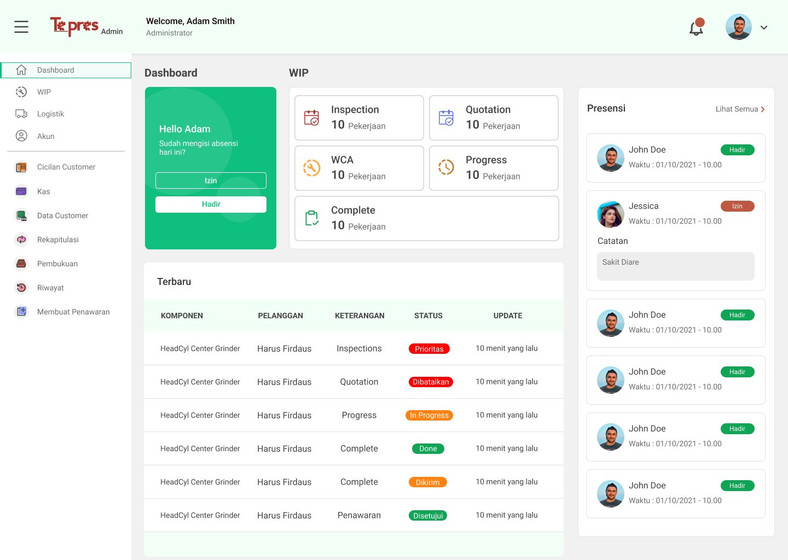
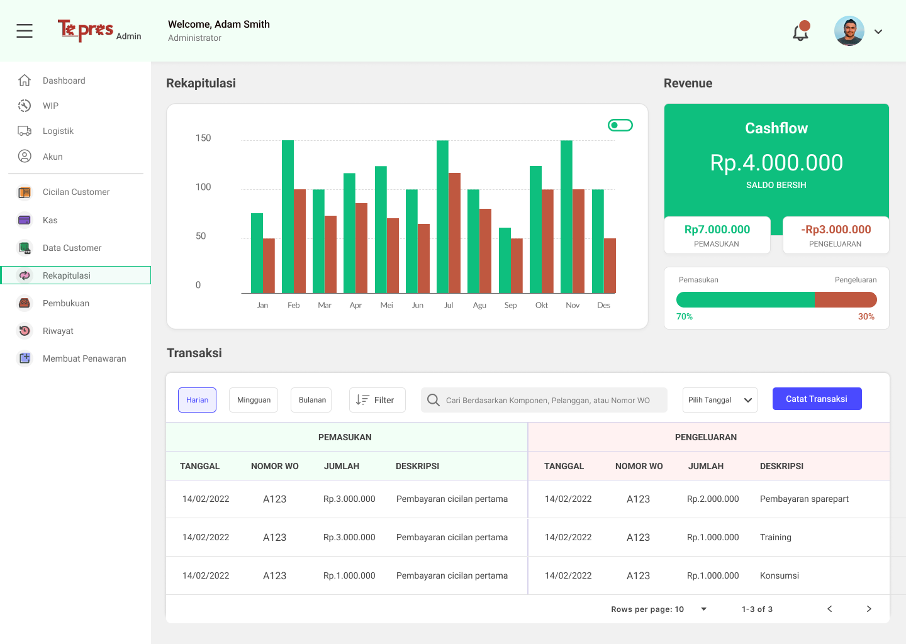
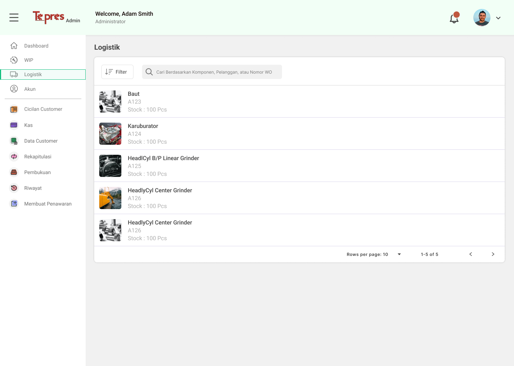
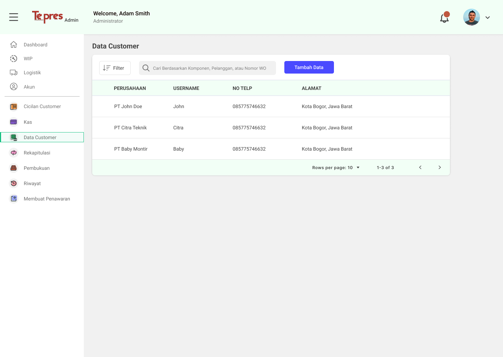
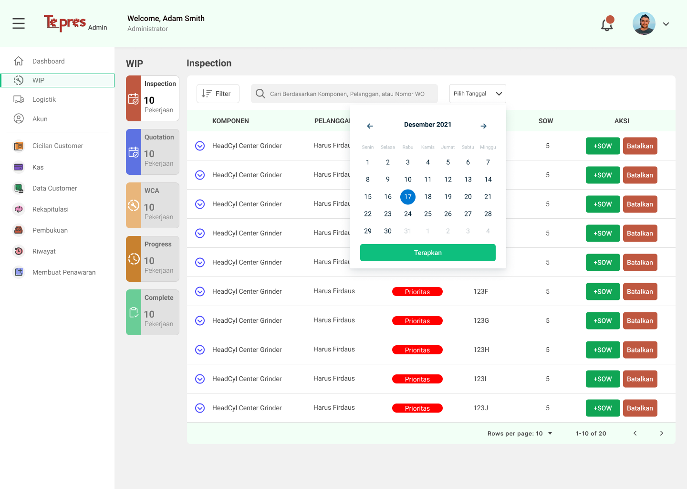

Hello!, this article will cover Tepres Web design process.
PT. Teknik Presisi Persada is a company involved in the field of heavy equipment repair. PT. Teknik Presisi Persada or usually called as Bengkel Tepres, handles repair services such as overhaul, resurface, regrind, center block, reconditioning, and welding. In order to grow their business and services, the company wanted to digitalize their system.
Goals
Tepres App is a mobile and web-based information system developed to help the company in operating their activities digitally. The system is designed using Object-Oriented Analysis and Design and the UI/UX is designed using Design Thinking method. The system is expected to help users monitor company's resource, monitor the process of repairing client's components and make the payment method easier.
Shout out to my friend, because this project was led by her. We were assigned to different role, I was on the Web Designer role and she was on the UX Research role, but we are working on the tasks together. We are expected to contribute to the company and achieving the project's goals
Design Thinking Phase
Unfortunately, I only can share the last two phases of this project. The phases include Prototype (only few pages) and Test result.
Prototype
In this phase, we combined the research findings with the user's requirement resulting in a user-friendly interface which the final product was high-fidelity prototype. Then, we handed off the research to another team that responsible for designing mobile interface. Additionally, we use tools like Figma, Google Workspace, and Miro to support this project.
I was responsible for converting UI of the mobile application into website interface.
In order to convert the UI, one of the basic knowledge that we need to understand in front-end development as a UI designer is layout of the web. So, when we handed off the design to the developer, there will be not misunderstanding between team.
The final high-fidelity prototype are shown below:
The page shown in above is Dashboard Page. This page contains summaries of day-to-day activities in the company with a sidebar to easily interact with the web.
The page shown in above is Transaction Page. This page contains every history transactions made and company's revenie with visualized graph.
The page shown in above is Logistic Page. This page contains stock resources of components that can be updated and added a search box used for find data.
The page shown in above is Customer Data Page. This page contains every company's customer data, added a search box and a button for creating new customer data.
The page shown in above is Work-in-progress Page. This page contains the completes processes of customer's components while in repair.
Testing
In this phase, we conduct evaluation using SUS Questionnaire (System Usability Scale) methods, to evaluate and understand the user's satisfaction for the system we have created with the prototype.
The prototype was tested with 5 respondents using the SUS Questionnaire and the results are presented in table below:
| Respondent | Final Score |
|---|---|
| Respondent 1 | 67.5 |
| Respondent 2 | 67.5 |
| Respondent 3 | 57.5 |
| Respondent 4 | 87.5 |
| Respondent 5 | 90 |
| Average | 75.62 |
Based on the average score above, it can be concluded that the satisfaction aspect of the system scored 75,62. Using Bangor, Kortum & Miller scale (2009), the designed system is categorized as "Good," which means that users are good enough satisfied and find the system usable with few difficulties.